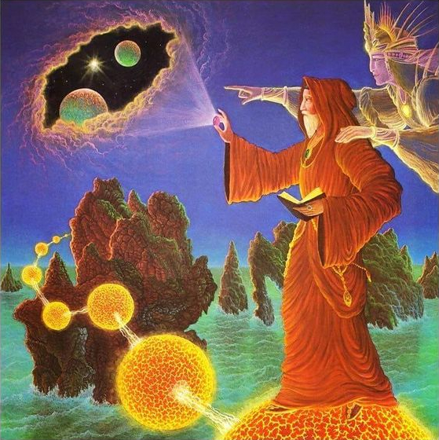

A Lenda de Pistis Sophia
Prefácio
Pistis Sophia é uma figura central em várias tradições gnósticas, particularmente na escola valentiniana do gnosticismo. O nome "Pistis Sophia" pode ser traduzido como "Fé e Sabedoria," e ela é frequentemente personificada como uma entidade que representa aspectos da alma humana, a busca espiritual e o drama cósmico entre o bem e o mal.
O Papel de Pistis Sophia no Gnosticismo
Na mitologia gnóstica, Pistis Sophia é uma das éons ou emanações divinas que provêm do ser supremo conhecido como o "Pléroma" ou "Plenitude." O Pléroma é o reino divino, cheio de luz e espiritualidade, de onde emanam as divindades menores.

A Queda de Pistis Sophia
Uma das narrativas mais conhecidas envolvendo Pistis Sophia é a sua queda. De acordo com o mito, Pistis Sophia, movida por um desejo de conhecer e alcançar a Luz superior (que representa o verdadeiro Deus ou a verdade suprema), desce do Pléroma. No entanto, ela comete um erro ao tentar alcançar a Luz por conta própria, sem o consentimento ou a guia dos éons superiores. Esse erro a leva a cair em um estado inferior de existência, no caos e nas regiões materiais, onde encontra escuridão e sofrimento.
Este processo de queda simboliza a alma humana perdida no mundo material, longe de sua origem divina. Pistis Sophia, em sua condição caída, é cercada por poderes inferiores (archons) que a mantêm cativa. Ela então percebe seu erro e clama por ajuda, cantando hinos de arrependimento e súplicas para ser resgatada.
O Resgate de Pistis Sophia
A história prossegue com o surgimento de uma figura salvadora, muitas vezes identificada com Cristo (ou o Logos), que desce para resgatá-la. Ele a liberta das garras dos archons e a guia de volta ao Pléroma, onde ela é restaurada ao seu lugar legítimo entre os éons. Esse resgate simboliza a salvação da alma, que, mesmo perdida no mundo material, pode ser redimida através do conhecimento (gnosis) e da intervenção divina.
Significado Espiritual
Pistis Sophia representa a alma humana em sua jornada espiritual. Sua queda simboliza a condição da humanidade, afastada de sua origem divina e presa nas armadilhas do mundo material. Sua busca pela redenção e eventual retorno ao Pléroma reflete o processo de purificação e ascensão espiritual que é central ao gnosticismo.
Além disso, a história de Pistis Sophia sublinha a importância da fé (pistis) e da sabedoria (sofia) no caminho espiritual. A fé é necessária para perseverar nas dificuldades e na escuridão, enquanto a sabedoria é crucial para alcançar a gnose, o conhecimento salvador.
Pistis Sophia no Texto "Pistis Sophia"
Há um texto gnóstico chamado Pistis Sophia, que é uma coleção de ensinamentos e revelações atribuídas ao Cristo ressuscitado, dirigidas aos seus discípulos. O texto explora a história de Pistis Sophia em detalhe, além de oferecer uma visão abrangente sobre a cosmologia gnóstica e os mistérios espirituais.
O texto revela um diálogo entre Cristo e seus discípulos, onde são abordadas questões profundas sobre a natureza da alma, o destino após a morte, e os caminhos para a salvação. Pistis Sophia é discutida como um exemplo de como a alma, mesmo em erro, pode encontrar redenção através da intervenção divina e do arrependimento sincero.
Reflexão
Pistis Sophia é uma figura rica em simbolismo espiritual. Ela personifica a jornada da alma através do erro, arrependimento e redenção. Sua história ressoa com temas universais de queda e redenção, simbolizando a busca humana pelo retorno à sua verdadeira natureza espiritual, a conexão com o divino, e a importância do conhecimento e da fé nesse processo.